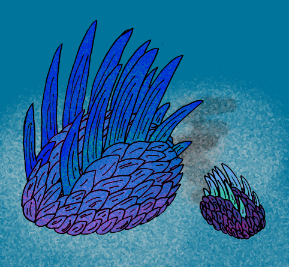
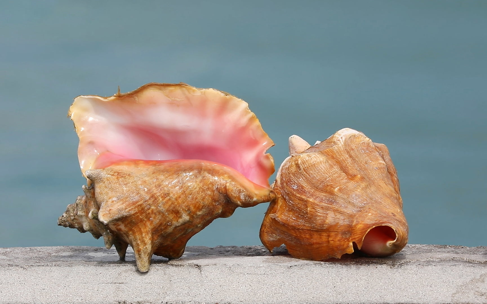
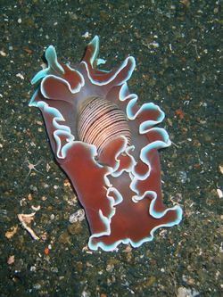
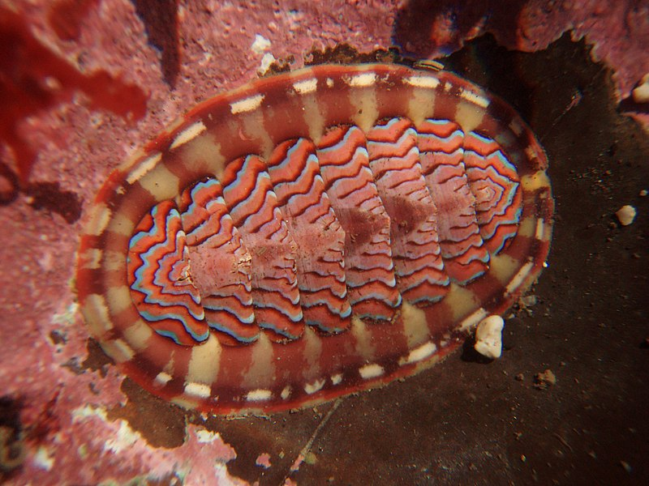
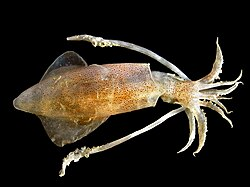

Invertebrados
¿Qué son los Moluscos?
Los moluscos (Mollusca, del latín mollis "blando") conforman uno de los grandes filos del reino animal. Son invertebrados protóstomos celomados, triblásticos de simetría bilateral (aunque algunos pueden tener una asimetría secundaria) no segmentados, de cuerpo blando, desnudo o protegido por una concha. Los moluscos son los invertebrados más numerosos después de los artrópodos, e incluyen formas tan conocidas como las almejas, machas, navajuelas, ostras, sepias, calamares, pulpos, babosas y la gran diversidad de caracoles, tanto marinos como terrestres.
Se calcula que pueden existir cerca de 100 000 especies vivientes y 35 000 especies extintas. Los moluscos tienen una larga historia geológica, esta abarca desde el Cámbrico Inferior hasta la actualidad. Originalmente de ambientes marinos, han experimentado un gran éxito evolutivo. Están presentes en una amplia variedad de hábitats: cuerpos de agua dulce, mares, en ambientes terrestres, desde altitudes de más de 3000 m sobre el nivel del mar hasta profundidades oceánicas de más de 5000 m y, por último, desde aguas polares hasta tropicales. Estos animales suelen ser organismos comunes del litoral marino de todo el planeta.
Características generales
Los moluscos son triblásticos, bilaterales y celomados. El celoma en los adultos queda reducido a vestigios alrededor de los nefridios, gónadas, corazón e intestino. El cuerpo se encuentra cubierto por el manto. Este último está formado por una epidermis ciliada con glándulas mucosas y una cutícula cuya función se limita a la formación de la concha calcárea mediante secreciones glandulares. Aquellos moluscos que no tengan concha, en su lugar aparecerán espículas o placas calcáreas. Por debajo del manto encontramos la cavidad paleal donde se encuentran los ctenidios, osfradios, nefridioporos y el ano. Han desarrollado un sistema circulatorio abierto (en su mayoría hemocele) formado por un ventrículo y dos aurículas. Un aparato digestivo completo provisto de la rádula o lengua raspadora localizada en la región bucal.

Anatomía
Manto, concha y cavidad paleal
El patrón básico de un molusco consiste en un organismo de cuerpo blando; oval, con simetría bilateral y una concha convexa en forma de sombrero chino (ausente o interna en algunos grupos). En vez de concha, también pueden poseer espículas que pueden aparecer en estado embrionario (en adultos pueden fusionarse para dar una concha) o placas, aunque todas con el mismo origen. La concha se forma gracias a la epidermis subyacente, denominada manto (en posición dorsal), que tiene células secretoras de carbonato cálcico que cristaliza en el exterior en forma de aragonito o de calcita; el manto también secreta una substancia quitinosa de composición compleja, la conquiolina, que se deposita sobre el sustrato calcáreo formando un estrato orgánico denominado perióstraco, esencial para evitar la disolución de la concha en ambientes ácidos.

En la parte posterior, el manto forma una cámara denominada cavidad paleal. En esta cavidad se alojan: las branquias, que tienen una estructura muy característica en forma de peine (ctenidios); los osfradios, (órganos quimiorreceptores encargados de detectar la calidad del agua) donde desembocan los nefridios (a través de los nefridioporos); las gónadas, (a través de los gonoporos) y por último, el ano. En los gasterópodos terrestres, la superficie interna de la cavidad paleal está muy irrigada, el intercambio gaseoso se produce a través del epitelio actuando como un pulmón.
La epidermis de los moluscos está recubierta de células epiteriales y células glandulares. Podemos encontrar dos tipos de células glandulares: mucosas, sobre todo en la parte ventral y glándulas de la concha, situadas en el manto.

Pie
Este órgano locomotor es una apomorfía de los moluscos. El pie muestra una enorme plasticidad evolutiva ya que está dotado de una musculatura compleja y potente. Se cree que, primitivamente, era reptante (parecido al de los gasterópodos actuales), pero ha experimentado una gran diversificación originando: el pie excavador de los bivalvos, el pie escindido en tentáculos de los cefalópodos o el pie nadador de algunos gasterópodos pelágicos, entre otros.
.jpg)
Sistema circulatorio
Sistema nervioso
El sistema circulatorio es abierto, a excepción de los cefalópodos (estos necesitan un sistema cerrado debido a que son muy activos y necesitan una mayor presión). El corazón está tabicado y se divide, principalmente, en tres cámaras (dos aurículas y un ventrículo), aunque el número de estas es muy variable. El corazón está recubierto por una fina tela que forma la cavidad pericárdica. La hemolinfa transporta pigmentos respiratorios del ventrículo a los espacios tisulares mediante los vasos. En los espacios tisulares va a ser recogida por otros vasos que van hacia las branquias, donde la sangre se oxigena para volver al corazón a través de la aurícula.
Es muy variable. El modelo básico del sistema nervioso de los moluscos comprende un anillo periesofágico del cual salen dos pares de cordones nerviosos hacia la parte posterior, uno hacia el pie y otro hacia la masa visceral. Los órganos de los sentidos comprenden ojos, (muy complejos en los cefalópodos); estatocistos situados en el pie (sentido del equilibrio) y quimiorreceptores, como los osfradios (situados en las branquias); papilas y fosetas olfatorias en la cabeza y el órgano subradular (asociado a la rádula). El máximo grado de cefalización se da en los cefalópodos, en los que se puede hablar de un auténtico cerebro, protegido por un cráneo cartilaginoso.
Sistema digestivo y alimentación
Tienen tubo digestivo completo. La cavidad bucal revestida de quitina, presenta un órgano de alimentación único: la rádula, que consiste en una base cartilaginosa alargada (odontóforo) recubierta de hileras longitudinales de dentículos quitinosos curvos; la forma y la disposición de los dentículos se relaciona con el tipo de alimentación. La rádula está provista de potentes músculos que le permiten proyectarse fuera de la boca, actuando como raspador. El moco secretado por las glándulas salivales de la boca lubrican la rádula y aglutinan las partículas para ser ingeridas.
A continuación hay un esófago y un estómago, más o menos complejo, en el que desembocan las glándulas digestivas (hígado o hepatopáncreas); la circulación de la masa mucosa que contiene el alimento (próstilo) se ve favorecida por la presencia de numerosos cilios. Las partículas alimenticias entran en los conductos de las glándulas digestivas. El intestino es largo y enrollado, el ano, se encuentra en posición medio-dorsal en la parte posterior de la cavidad paleal. Sus formas de alimentación son muy variadas. Pueden ser fitófagos, como las lapas o los caracoles terrestres; carnívoros, como los conos, filtradores, como las almejas; detritívoros, babosas y caracoles, etc.
Embriología
La embriogenia típica de los moluscos comienza con una segmentación espiral del huevo fuertemente determinada. La gastrulación tiene lugar por epibolia, invaginación o ambas. La gástrula resultante se desarrolla en una larva trocófora planctónica. El proceso es virtualmente idéntico al de los anélidos. Esta larva trocófora puede desarrollar ampliamente alguna de las bandas ciliadas para dar una estructura delgada en forma de velo. En la mayoría de los moluscos, esta larva da lugar a la larva velígera, más desarrollada, en la que se puede observar ya el pie, la concha y otras estructuras. Finalmente, la larva velígera desciende al fondo y sufre una metamorfosis para adoptar el hábitat bentónico típico del adulto. Los cefalópodos y los gasterópodos terrestres y de agua dulce tienen siempre desarrollo directo.
Filogenia tradicional
Aculifera
Los aculíferos (Aculifera) son un clado de moluscos sin concha, pero con escleritos, espículas, quetas o placas calcáreas en el manto. Incluyen a los quitones (Polyplacophora) y a los Aplacophora, que a su vez se dividen en Caudofoveata y Solenogastres. La validez de este grupo viene avalada por estudios genéticos. Los representantes más antiguos de los aculíferos (moluscos con espículas o placas) y de los conchíferos (moluscos con concha) datan del Cámbrico temprano; sin embargo el registro fósil no aporta información de organismos que pudieran ser ancestros de ambos grupos, por lo que el modelo de molusco ancestral permanece incierto.

Conchifera
Los conchíferos (Conchifera, Gegenbaur 1878) forman un subfilo del filo de los moluscos. Son moluscos de formas muy diversas, generalmente bivalvos. El manto está limitado a una parte del tronco. Por lo general, están cubiertos total o parcialmente por la concha. Entre ellos se encuentran las ostras, almejas, mejillones, vieiras, etc.
Hasta hace unos 200 años, los conchíferos formaban un grupo de animales distintos de los moluscos que no incluían en esa época más que animales de cuerpo desnudo, sin concha. Después de estudios más completos sobre su anatomía, los conchíferos se reagruparon con los moluscos. La concha está formada por una capa orgánica y dos capas calcáreas, con superficie y espesor crecientes como en los polyplacophora.
